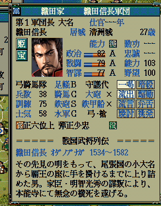
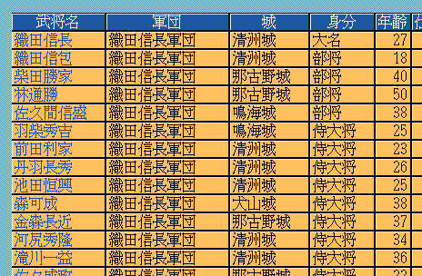

｢天翔 八丁堀｣フォントの実態は、「八丁堀16」というビットマップフォントを、
現代のWindowsで利用されるttf形式へと変換したものです。
全体に対するフォントの雰囲気は下記のようになります。


インストール方法は、通常のフォントと同じです。｢tshacchobori.ttf｣ファイルを｢C:\WINDOWS\Fonts｣フォルダにペーストすると、自動的にインストールされます。
その他の、解説は、｢天翔 明朝｣の解説と同じとなります。｢天翔 明朝｣を｢天翔 八丁堀｣と読み替えてください。